Determinanții sociali ai stării de sănătate
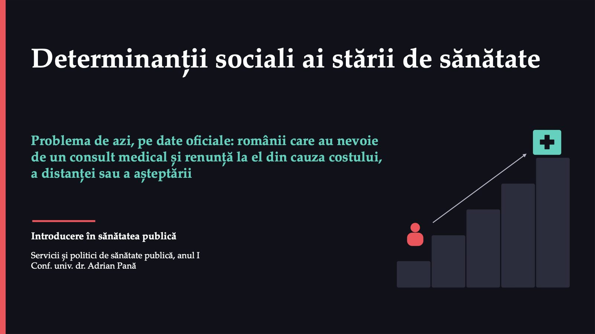
1 / 46Bună ziua. Azi lucrăm pe o problemă reală, cu date oficiale: oameni din România care au avut nevoie de un consult medical și nu l-au primit, din cauza costului, a distanței sau a timpului de așteptare. Nu e un exemplu construit pentru curs. Cifrele sunt publicate de Eurostat, iar oamenii din spatele lor sunt descriși într-un raport european despre România.
Rolul vostru azi: analiștii unei direcții de sănătate publică
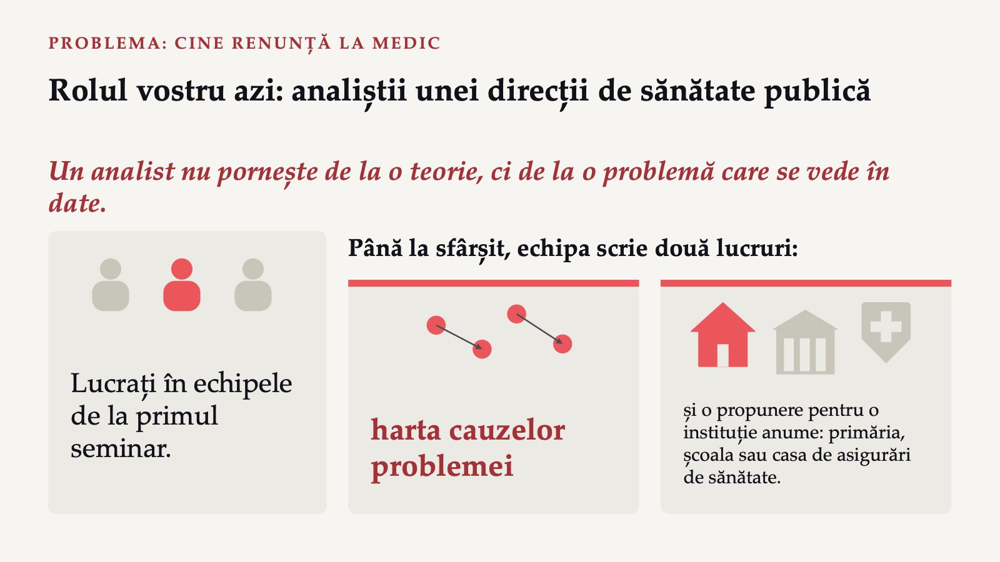
2 / 46Azi lucrați ca analiștii unei direcții de sănătate publică. Un analist nu pornește de la o teorie, ci de la o problemă care se vede în date. Întâi citim problema și cifrele ei. Apoi desenați harta cauzelor. La sfârșit scrieți ce ar putea face o instituție din afara spitalului: primăria, școala sau casa de asigurări de sănătate. Nu este un concurs și nu există o hartă corectă dinainte.
De unde vin cifrele
 3 / 46
3 / 46Problema se vede într-o anchetă europeană, ancheta asupra veniturilor și condițiilor de viață, cunoscută după prescurtarea ei, EU-SILC. Persoanele intervievate spun dacă au avut nevoie de un consult pe care nu l-au primit și din ce motiv. Eurostat publică aceste declarații pe grupuri, inclusiv după pragul sărăciei. Sub prag sunt cei cu un venit disponibil echivalent, adică venitul gospodăriei ajustat după mărimea ei, mai mic de 60% din venitul disponibil median al țării.
17,8
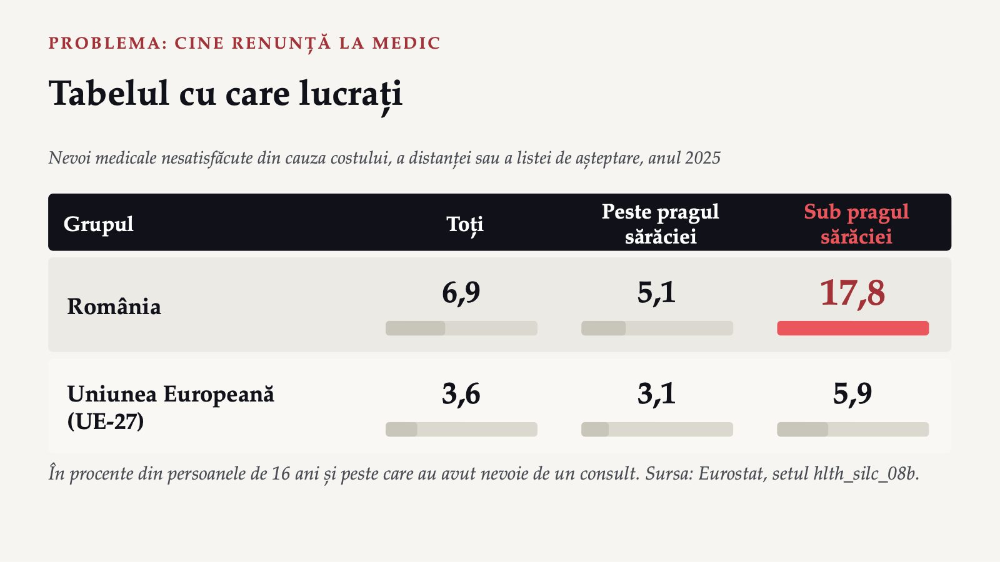
4 / 46Acesta este tabelul cu care lucrați; îl aveți și pe fișa echipei. Sunt cifrele cele mai recente, pentru anul 2025, din setul Eurostat al nevoilor medicale nesatisfăcute după pragul sărăciei. Nu vi-l citesc eu. Îl citiți voi, în echipă, în activitatea următoare.
Activitatea 1 · Problema, citită de echipă · opt minute
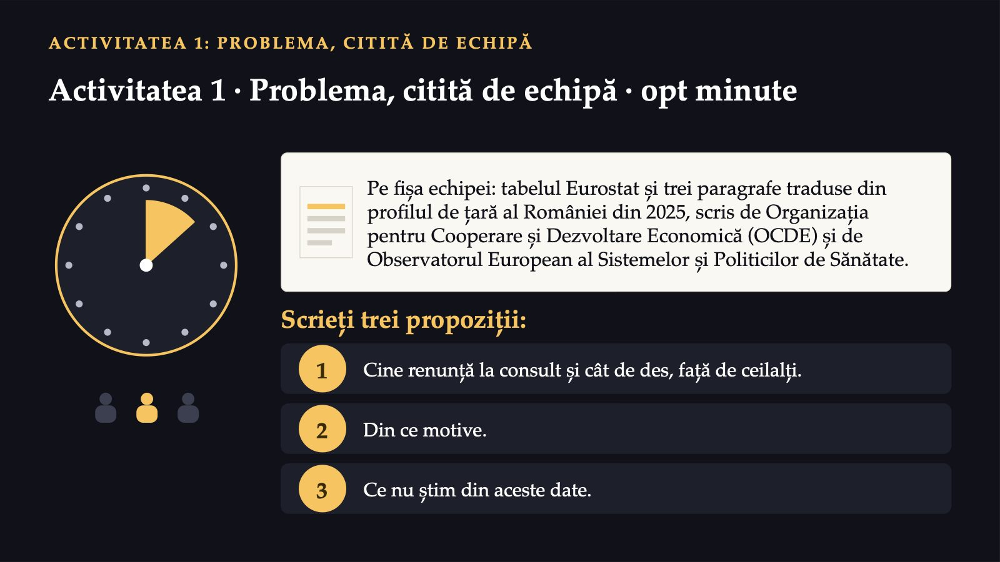
5 / 46Fiecare echipă are o pagină cu tabelul și cu trei paragrafe din profilul de țară al României din 2025. Profilul îl scriu OCDE și Observatorul European al Sistemelor și Politicilor de Sănătate, împreună cu Comisia Europeană. Scrieți trei propoziții: cine renunță la consult și cât de des față de ceilalți; din ce motive; ce nu știm din aceste date. A treia propoziție contează la fel de mult ca primele două.
Ce v-ar face pe voi să amânați un consult de care aveți nevoie?
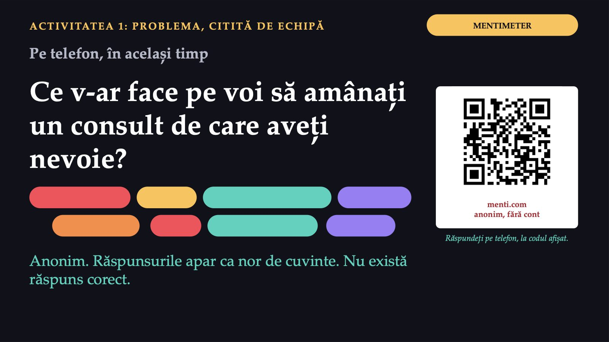
6 / 46În timp ce echipa lucrează, fiecare dintre voi răspunde singur, anonim, la o întrebare de opinie: ce v-ar face pe voi să amânați un consult de care aveți nevoie? Răspunsurile apar ca nor de cuvinte. Nu există un răspuns bun sau unul rău.
Înainte de orice concluzie: trei verificări
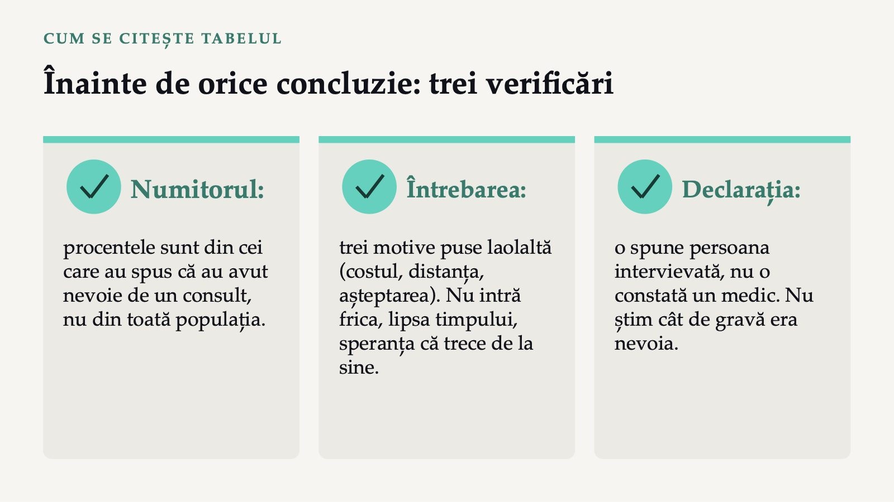
7 / 46Înainte de orice concluzie, un analist verifică trei lucruri. Mai întâi numitorul: procentele sunt calculate din cei care au spus că au avut nevoie de un consult; cine n-a avut nevoie de medic nu intră în calcul. Apoi întrebarea: cifra pune laolaltă trei motive, costul, distanța și așteptarea, și lasă deoparte altele, cum ar fi frica, lipsa timpului sau speranța că trece de la sine. În sfârșit, este o declarație a persoanei intervievate, nu o constatare a unui medic: nu știm cât de gravă era nevoia.
Cine renunță și cât de des
![CUM SE CITEȘTE TABELUL Cine renunță și cât de des România, 2025: sub pragul sărăciei 17,8%, peste prag 5,1%. sub pragul sărăciei 17,8% peste prag 5,1% Diferența: 12,7 puncte procentuale. Raportul: circa 3,5 (calculul nostru pe valorile Eurostat). Altfel spus: dintre zece oameni sub pragul sărăciei care au avut nevoie de un consult, aproape doi nu l-au primit. În UE, același raport este de circa 1,9. Diferența mare nu e între România și media europeană, ci în interiorul României. Sursa: Eurostat, setul hlth_silc_08b.](diapozitive/C07/008.jpg) 8 / 46
8 / 46Acum cifrele. Printre cei peste pragul sărăciei, 5,1% dintre cei care au avut nevoie de un consult nu l-au primit; printre cei sub prag, 17,8%. Altfel spus, dintre zece oameni sub prag care au avut nevoie de un consult, aproape doi nu l-au primit. Cei sub prag au raportat nevoi nesatisfăcute de circa 3,5 ori mai des decât cei peste prag; diferența este de 12,7 puncte procentuale. În Uniunea Europeană, același raport este de circa 1,9. Diferența mare nu este între România și media europeană, ci în interiorul României.
Al doilea document: profilul de țară din 2025
![CUM SE CITEȘTE TABELUL Al doilea document: profilul de țară din 2025 Aceeași anchetă, anul 2024: 6% dintre românii care au avut nevoie de îngrijiri medicale au avut nevoi nesatisfăcute din cauza costului, a distanței sau a așteptării; barierele financiare au fost motivul principal. Circa 4% peste pragul sărăciei, 15% sub prag. Cu o zecimală, la Eurostat: 6,0%, 4,4% și 15,1%. 4,4% 15,1% Profilul scrie „aproape de patru ori”. Pe valorile cu zecimală, raportul este de 3,4. Când un raport spune „de patru ori”, verificați de unde vine cifra și cum a fost rotunjită.](diapozitive/C07/009.jpg) 9 / 46
9 / 46Profilul de țară folosește datele aceleiași anchete, dar din anul precedent. În 2024, 6% dintre românii care au avut nevoie de îngrijiri medicale au raportat nevoi nesatisfăcute din cauza costului, a distanței sau a așteptării, iar barierele financiare au fost motivul principal. Proporția a fost de circa 4% peste pragul sărăciei și de 15% sub prag; cu o zecimală, la Eurostat, 6,0%, 4,4% și 15,1%. Profilul scrie că proporția celor sub prag este aproape de patru ori mai mare; pe valorile cu zecimală, raportul este de 3,4. Diferența nu schimbă concluzia, dar arată un obicei bun: când un raport spune „de patru ori”, verificați de unde vine cifra și cum a fost rotunjită.
Cine sunt oamenii din spatele cifrelor
![OAMENII DIN SPATELE CIFRELOR Cine sunt oamenii din spatele cifrelor Asigurarea socială de sănătate este obligatorie, dar circa 11% din populație nu era asigurată în 2024. Printre neasigurați, profilul îi numește întâi pe cetățenii care trăiesc în străinătate, adesea asigurați în țara în care locuiesc. Apoi: lucrătorii fără forme legale; șomerii care nu sunt înregistrați pentru ajutor social; persoanele fără act de identitate, o barieră mai frecventă în zonele rurale marginalizate, inclusiv în comunitățile de romi. Neasigurații au un pachet minim plătit de stat, dar plătesc din buzunar medicamentele din ambulatoriu, o parte din analize și imagistica. Plățile directe mari, mai ales pentru medicamente și îngrijirile stomatologice, sunt o barieră importantă pentru cei cu venituri mici.](diapozitive/C07/010.jpg) 10 / 46
10 / 46Același profil spune cine sunt oamenii din spatele cifrelor. Asigurarea socială de sănătate este obligatorie, dar circa 11% din populație nu era asigurată în 2024. Printre neasigurați, raportul îi numește întâi pe cetățenii care trăiesc în străinătate, adesea asigurați în țara în care locuiesc. Urmează lucrătorii fără forme legale, șomerii care nu sunt înregistrați pentru ajutor social și persoanele fără act de identitate, o barieră mai frecventă în zonele rurale marginalizate, inclusiv în comunitățile de romi. Neasigurații au acces la un pachet minim de servicii plătit de stat, dar plătesc din buzunar medicamentele din ambulatoriu, o parte din analize și imagistica. Rezumatul raportului adaugă că plățile directe mari, mai ales pentru medicamente și pentru îngrijirile stomatologice, sunt o barieră importantă pentru cei cu venituri mici.
Cazul ședinței
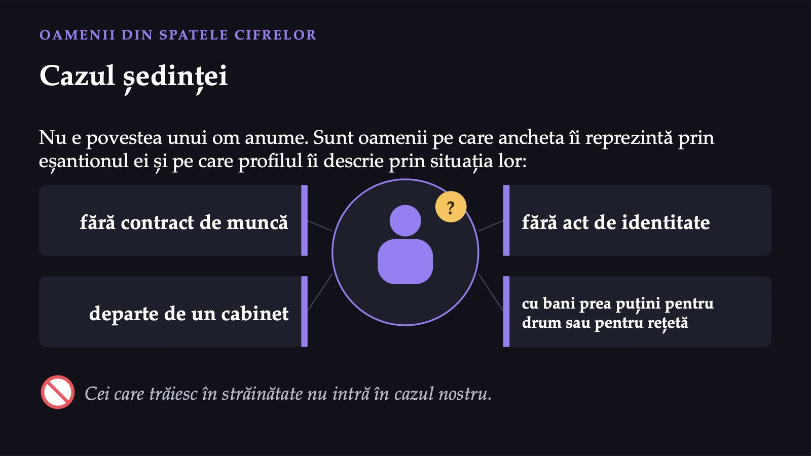
11 / 46Acesta este cazul ședinței, fără cei care trăiesc în străinătate. Nu e povestea unui om anume, ci a oamenilor pe care ancheta îi reprezintă prin eșantionul ei și pe care raportul îi descrie prin situația lor: fără contract de muncă, fără act de identitate, departe de un cabinet, cu bani prea puțini pentru drum sau pentru rețetă. Pentru ei căutăm azi cauzele.
Ce sunt determinanții sociali ai sănătății
![CE SUNT DETERMINANȚII SOCIALI AI SĂNĂTĂȚII Ce sunt determinanții sociali ai sănătății Ce vedeți în tabel nu este o boală și nici alegerea unor oameni neatenți la sănătatea lor. Este o diferență care urmează venitul. Organizația Mondială a Sănătății (OMS): condițiile în care oamenii se nasc, cresc, trăiesc, muncesc și îmbătrânesc, împreună cu accesul lor la putere, la bani și la resurse. Nu sunt boli și nici tratamente. Sunt contextul: ce își permite o familie, unde locuiește, ce fel de muncă are, ce școală a putut urma, cât de departe e cabinetul medical.](diapozitive/C07/012.jpg) 12 / 46
12 / 46Ce vedeți în tabel nu este o boală și nici o alegere a unor oameni neatenți la sănătatea lor. Este o diferență care urmează venitul. Ca s-o explicăm, sănătatea publică folosește noțiunea de determinanți sociali ai sănătății. Organizația Mondială a Sănătății îi descrie ca fiind condițiile în care oamenii se nasc, cresc, trăiesc, muncesc și îmbătrânesc, împreună cu accesul lor la putere, la bani și la resurse. Nu sunt boli și nici tratamente. Sunt contextul în care trăiesc oamenii. Sunt contextul: ce își permite o familie, unde locuiește, ce fel de muncă are, ce școală a putut urma, cât de departe e cabinetul medical.
Trei familii de factori
![CE SUNT DETERMINANȚII SOCIALI AI SĂNĂTĂȚII Trei familii de factori Factorii biologici: vârsta, sexul, zestrea genetică. Explică o parte reală a diferențelor; avantajul de supraviețuire al femeilor în țările industrializate are o componentă biologică. Comportamentele: fumatul, alimentația, mișcarea, alcoolul. Sunt distribuite diferit între grupurile sociale. Determinanții sociali nu îi înlocuiesc pe ceilalți, ci îi modelează. Cine are un venit mic și o muncă cu ture lungi are mai puține ocazii de a mânca sănătos și de a face mișcare, chiar dacă știe foarte bine ce ar trebui să facă.](diapozitive/C07/013.jpg) 13 / 46
13 / 46Determinanții sociali se deosebesc de alte două familii de factori. Factorii biologici, vârsta, sexul, zestrea genetică, explică o parte reală a diferențelor de sănătate; de pildă, avantajul de supraviețuire al femeilor în țările industrializate are o componentă biologică. Comportamentele, fumatul, alimentația, mișcarea, alcoolul, sunt distribuite diferit între grupurile sociale. Determinanții sociali nu îi înlocuiesc pe aceștia, ci îi modelează. Comportamentele de risc au în acest curs o ședință proprie; aici ne interesează numai legătura lor cu contextul social.
Un model în straturi: Dahlgren și Whitehead (figura datează din 1991)
![CE SUNT DETERMINANȚII SOCIALI AI SĂNĂTĂȚII Un model în straturi: Dahlgren și Whitehead (figura datează din 1991) În centru: vârsta, sexul, ereditatea. În jur: stilul de viață; rețelele sociale și comunitatea; condițiile de viață și de muncă, unde intră și serviciile de sănătate. La exterior: condițiile socio-economice, culturale și de mediu ale întregii societăți. Factorii „din aval”, apropiați de individ, și cei „din amonte”, care țin de societate. Avertismentul autorilor: cine confundă ce explică sănătatea unei populații cu ce explică diferențele dintre grupuri ajunge la politici prea generale.](diapozitive/C07/014.jpg) 14 / 46
14 / 46Un model folosit de multă vreme, cel al lui Dahlgren și Whitehead, așază factorii în straturi, ca un curcubeu: în centru factorii individuali, apoi stilul de viață, rețelele sociale și comunitatea, condițiile de viață și de muncă, iar la exterior condițiile întregii societăți. Aceiași autori deosebesc factorii din aval, apropiați de individ, de cei din amonte, care țin de societate. Pentru problema noastră, avertismentul lor este exact: o campanie care le spune oamenilor „mergeți la control” atinge un factor din aval; nu schimbă nici costul drumului, nici lipsa asigurării. Medicul tratează boala care a ajuns la spital prea târziu. Analistul de sănătate publică întreabă de ce a ajuns târziu și caută cauza acolo unde se poate schimba.
determinanții structurali și intermediari
![PRIMUL TERMEN NOU: DETERMINANȚII STRUCTURALI ȘI INTERMEDIARI Termenul nou 1: determinanții structurali și intermediari Cadrul comisiei OMS pentru determinanții sociali ai sănătății, publicat în 2010 Structurali: stabilesc poziția socială. Contextul socio-economic și politic al țării (guvernarea, politicile economice și sociale, cultura) și locul fiecăruia pe scara socială, după venit, educație, ocupație, gen sau etnie. Intermediari: condițiile concrete care decurg din această poziție și acționează direct asupra sănătății. Condițiile materiale (locuința, munca, hrana), factorii psihosociali (stresul, sprijinul celorlalți), comportamentele și factorii biologici, sistemul de sănătate însuși.](diapozitive/C07/015.jpg) 15 / 46
15 / 46Organizația Mondială a Sănătății a înființat o comisie pentru determinanții sociali ai sănătății, iar cadrul conceptual folosit de comisie a fost publicat în 2010. Cadrul răspunde la întrebarea noastră: pe ce drum ajunge poziția socială a unui om să se vadă în sănătatea lui? Determinanții structurali stabilesc poziția socială: contextul țării și locul fiecăruia pe scara socială. Determinanții intermediari sunt condițiile concrete care decurg din această poziție și care acționează direct asupra sănătății.
În cuvinte obișnuite
![PRIMUL TERMEN NOU: DETERMINANȚII STRUCTURALI ȘI INTERMEDIARI În cuvinte obișnuite Structurali: pe ce treaptă a societății stă un om. Intermediari: cum arată viața de zi cu zi pe acea treaptă. Studiile puține și venitul mic țin de treaptă. Munca fără contract, lipsa asigurării și programul care nu-i lasă o zi liberă pentru medic țin de viața de zi cu zi. Sistemul de sănătate e printre intermediari. Poate atenua dezavantajul (un cabinet aproape, o asigurare care acoperă pe toată lumea, o rețetă compensată) sau îl poate adânci (plățile din buzunar, listele lungi de așteptare).](diapozitive/C07/016.jpg) 16 / 46
16 / 46În cuvinte obișnuite: determinanții structurali spun pe ce treaptă a societății stă un om; determinanții intermediari spun cum arată viața de zi cu zi pe acea treaptă. Cadrul pune și sistemul de sănătate printre determinanții intermediari. Detaliul contează pentru problema noastră: accesul la consult nu e doar rezultatul sărăciei, ci și un loc unde sistemul poate atenua sau poate adânci dezavantajul. Poate atenua dezavantajul (un cabinet aproape, o asigurare care acoperă pe toată lumea, o rețetă compensată) sau îl poate adânci (plățile din buzunar, listele lungi de așteptare).
Lanțul cauzal, de la stânga la dreapta
![PRIMUL TERMEN NOU: DETERMINANȚII STRUCTURALI ȘI INTERMEDIARI Lanțul cauzal, de la stânga la dreapta Contextul (politicile, piața muncii, protecția socială) poziția socială condițiile de viață și de muncă, stresul, comportamentele, accesul la servicii sănătatea sau boala Și un drum înapoi: o boală gravă poate scoate un om din muncă și îl poate coborî pe scara socială. Un fragment pentru problema noastră: studii puține și venit mic muncă fără contract, fără asigurare consultul amânat din cauza costului și a drumului boala descoperită târziu, cu complicații Fiecare săgeată este o ipoteză care poate fi verificată cu date.](diapozitive/C07/017.jpg) 17 / 46
17 / 46Cadrul se citește ca un lanț, de la stânga la dreapta: contextul, apoi poziția socială a fiecăruia, apoi condițiile de viață și de muncă, stresul, comportamentele și accesul la servicii, iar la capăt sănătatea sau boala. Lanțul are și un drum înapoi: o boală gravă poate scoate un om din muncă și îl poate coborî pe scara socială. Pentru problema noastră, un fragment de lanț ar putea arăta ca pe ecran. Fiecare săgeată este o ipoteză care poate fi verificată cu date. Ce veți desena în echipă este tocmai un astfel de lanț, mai bogat, cu mai multe ramuri.
Abordarea pe parcursul vieții
![PRIMUL TERMEN NOU: DETERMINANȚII STRUCTURALI ȘI INTERMEDIARI Abordarea pe parcursul vieții Cadrul din 2010 trece în revistă trei explicații ale legăturii dintre poziția socială și sănătate: selecția socială, cauzalitatea socială și perspectiva pe parcursul vieții. Modelul perioadelor critice: o expunere într-o perioadă sensibilă (sarcina, copilăria mică) poate lăsa urme durabile. Modelul acumulării riscului: dezavantajele și expunerile se adună de-a lungul vieții, iar efectul lor crește odată cu durata și numărul lor. Întrebarea se schimbă: nu doar de ce un adult sărac renunță azi la consult, ci și ce ar fi putut schimba traseul mai devreme (o școală terminată, un părinte cu asigurare, un medic de familie în comună).](diapozitive/C07/018.jpg) 18 / 46
18 / 46Cadrul din 2010 trece în revistă trei explicații ale legăturii dintre poziția socială și sănătate: selecția socială, adică cei bolnavi coboară pe scara socială; cauzalitatea socială, adică poziția produce boala prin factorii intermediari; și perspectiva pe parcursul vieții. Ultima are două variante: modelul perioadelor critice și modelul acumulării riscului. Pentru problema noastră, ea schimbă întrebarea. Ideea nu este că destinul ar fi scris din copilărie, ci că intervențiile timpurii au cel mai mult timp să producă efecte. Întrebarea se schimbă: nu doar de ce un adult sărac renunță azi la consult, ci și ce ar fi putut schimba traseul mai devreme (o școală terminată, un părinte cu asigurare, un medic de familie în comună).
Activitatea 2 · Harta cauzelor · 20 de minute
![ACTIVITATEA 2: HARTA CAUZELOR Activitatea 2 · Harta cauzelor · 20 de minute Problema: românii sub pragul sărăciei care au nevoie de un consult și nu îl primesc din cauza costului, a distanței sau a așteptării. Pe schemă: cel puțin trei cauze structurale și cel puțin patru intermediare, legate prin săgeți. Lângă fiecare cauză: de unde ați lua o cifră care s-o verifice (o anchetă, un registru, un raport). Marcați cu o stea cele două legături pe care le considerați cele mai puternice și scrieți, pentru fiecare, o propoziție: de ce. Nu există o hartă corectă dinainte. O hartă bună are argumente pentru fiecare săgeată.](diapozitive/C07/019.jpg) 19 / 46
19 / 46Acum lucrați ca analiștii unei direcții de sănătate publică. Pe coala echipei aveți schema cadrului, cu trei coloane. Scrieți cel puțin trei cauze structurale și cel puțin patru intermediare ale problemei și legați-le prin săgeți. Lângă fiecare cauză notați de unde ați lua o cifră care s-o verifice: o anchetă, un registru, un raport. La sfârșit, marcați cu o stea cele două legături pe care le considerați cele mai puternice și scrieți, pentru fiecare, de ce. Nu există o hartă corectă dinainte; o hartă bună are argumente pentru fiecare săgeată.
Schema pe care lucrați
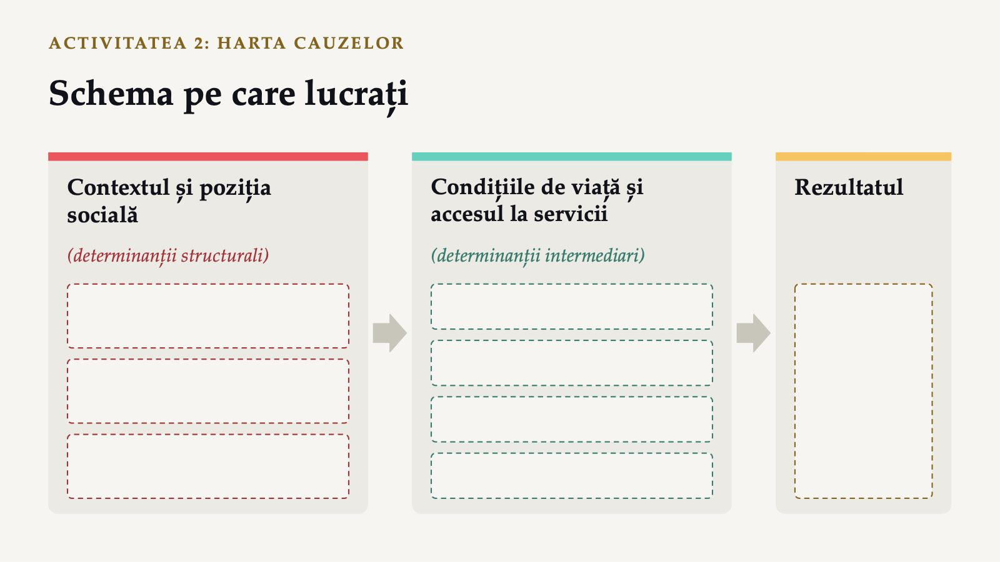
20 / 46Pe ecran și pe coala voastră este schema cadrului, cu trei coloane. În stânga, contextul și poziția socială: determinanții structurali. La mijloc, condițiile de viață și accesul la servicii: determinanții intermediari. În dreapta, rezultatul. Săgețile le trageți voi.
inechitatea în sănătate
![AL DOILEA TERMEN NOU: INECHITATEA ÎN SĂNĂTATE Termenul nou 2: inechitatea în sănătate Inegalitate: orice diferență măsurabilă de sănătate între grupuri. Bărbații și femeile au speranțe de viață diferite, vârstnicii au mai multe boli decât tinerii; unele diferențe au o componentă biologică importantă. Inechitate: o diferență de sănătate între grupuri sociale care este, în același timp, sistematică (sănătatea scade pe măsură ce scade poziția socială), produsă social (deci se poate schimba) și nedreaptă. Inegalitatea se măsoară; inechitatea se judecă. Comisia OMS: diferențele sistematice care pot fi evitate prin acțiuni rezonabile sunt nedrepte.](diapozitive/C07/021.jpg) 21 / 46
21 / 46Nu orice diferență de sănătate este o problemă de dreptate. Bărbații și femeile au speranțe de viață diferite, vârstnicii au mai multe boli decât tinerii: acestea sunt diferențe, sau inegalități. O diferență devine inechitate când are trei trăsături în același timp: este sistematică, este produsă social, deci se poate schimba, și este nedreaptă. Diferența dintre cele două cuvinte nu ține de statistică, ci de judecată. Inegalitatea se măsoară; inechitatea se judecă. Comisia Organizației Mondiale a Sănătății a formulat judecata fără ocolișuri: diferențele sistematice care pot fi evitate prin acțiuni rezonabile sunt nedrepte.
Problema noastră, prin cele trei întrebări
![AL DOILEA TERMEN NOU: INECHITATEA ÎN SĂNĂTATE Problema noastră, prin cele trei întrebări Este sistematică? Diferența dintre cei sub și cei peste pragul sărăciei este mare, și nu într-un singur an, ci în anii succesivi. Este produsă social? Costul consultului, al drumului și al medicamentelor, lipsa asigurării, distanța până la cabinet nu sunt biologie; țin de reguli, de bani și de organizarea serviciilor. ? Este nedreaptă? Aici argumentele sunt de judecată. Unii spun că o parte din neasigurați ar putea plăti contribuția. Alții, că un om fără act de identitate nu are de unde ști cum să se asigure. Analistul nu închide discuția, dar arată ce depinde de decizii publice.](diapozitive/C07/022.jpg) 22 / 46
22 / 46Trecem problema noastră prin cele trei întrebări. Este sistematică? Datele arată o diferență mare între cei sub și cei peste pragul sărăciei, și nu o dată, ci în anii succesivi. Este produsă social? Costul consultului, al drumului și al medicamentelor, lipsa asigurării, distanța până la cabinet nu sunt biologie. Este nedreaptă? Aici argumentele sunt de judecată, și e bine să le auzim pe toate. Analistul nu închide discuția, dar arată ce depinde de decizii publice. Alții, că un om fără act de identitate nu are de unde ști cum să se asigure.
Treaptă cu treaptă
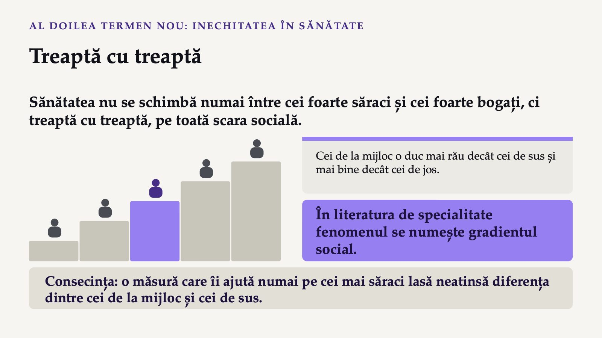
23 / 46Mai rămâne o idee, pe care o spunem în cuvinte obișnuite: sănătatea nu se schimbă numai între cei foarte săraci și cei foarte bogați, ci treaptă cu treaptă, pe toată scara socială. Cei de la mijloc o duc mai rău decât cei de sus și mai bine decât cei de jos. În literatura de specialitate fenomenul are un nume, gradientul social, dar îl puteți spune foarte bine în cuvinte obișnuite. Consecința practică este importantă: o măsură care îi ajută numai pe cei mai săraci lasă neatinsă diferența dintre cei de la mijloc și cei de sus.
Cum se măsoară o inechitate
![MĂSURAREA: CUM ȘTIM CĂ DIFERENȚA E SISTEMATICĂ Cum se măsoară o inechitate Întâi împărțim populația după poziția socială: venitul (de pildă, în cinci grupuri egale, de la cei mai săraci 20% la cei mai bogați 20%), educația, ocupația, mediul de rezidență, regiunea. Apoi comparăm același indicator de sănătate între grupuri: speranța de viață, mortalitatea, o boală cronică, nevoile nesatisfăcute. Pentru două grupuri: diferența (inegalitatea absolută) și raportul (inegalitatea relativă). OMS recomandă să le calculăm și să le citim împreună: niciuna singură nu dă imaginea completă.](diapozitive/C07/024.jpg) 24 / 46
24 / 46Un determinant social se poate măsura, iar inechitatea pe care o produce se poate număra. Măsurarea are doi pași: întâi împărțim populația după un criteriu de poziție socială, apoi comparăm același indicator de sănătate între grupuri. Pentru două grupuri, cele mai directe măsuri sunt diferența și raportul. Le-ați întâlnit deja la a treia ședință a cursului; aici le folosim pe problema noastră. Organizația Mondială a Sănătății recomandă să le calculăm și să le citim împreună, pentru că niciuna singură nu dă imaginea completă.
Același fenomen, alt numitor
![MĂSURAREA: CUM ȘTIM CĂ DIFERENȚA E SISTEMATICĂ Același fenomen, alt numitor Setul Eurostat hlth_silc_08: din toată populația de 16 ani și peste, nu numai din cei care au avut nevoie de consult; pe cinci grupuri de venit. România, 2025, costul, distanța sau așteptarea: cei mai săraci 20%: 6,0% · cei mai bogați 20%: 0,9% · pe ansamblu: 2,9%. Raportul dintre extreme: circa 6,7 (calculul nostru). Numai costul: 4,8% și 0,5%. În UE, pentru cele trei motive: 3,7% și 1,4%. cei mai săraci 20% cei mai bogați 20% România, 2025 6,0% 0,9% Numai costul 4,8% 0,5% În UE 3,7% 1,4% Un tabel spune cât de des renunță la medic cei care au nevoie de el. Celălalt, câți oameni dintr-un grup de venit sunt în această situație.](diapozitive/C07/025.jpg) 25 / 46
25 / 46Același fenomen se poate măsura și altfel, iar un analist trebuie să știe ce măsoară fiecare variantă. Eurostat publică nevoile nesatisfăcute și după cele cinci grupuri de venit, într-un alt set, cu un alt numitor: toată populația de 16 ani și peste. Pe acest numitor, în 2025, în România 6,0% dintre cei mai săraci 20% și 0,9% dintre cei mai bogați 20% au avut nevoi nesatisfăcute din cauza costului, a distanței sau a așteptării. Raportul dintre cele două extreme este de circa 6,7. Cifrele nu le contrazic pe cele din tabelul nostru; răspund la altă întrebare. Setul Eurostat hlth_silc_08: pe cinci grupuri de venit. Celălalt, câți oameni dintr-un grup de venit sunt în această situație.
Speranța de viață după educație, România, 2017
![MĂSURAREA: CUM ȘTIM CĂ DIFERENȚA E SISTEMATICĂ Speranța de viață după educație, România, 2017 Un bărbat de 30 de ani mai putea spera să trăiască, în medie: 39,9 ani (cel mult gimnaziul) · 41,7 ani (liceu sau școală profesională) · 46,3 ani (studii superioare). cel mult gimnaziul 39,9 ani liceu sau școală profesională 41,7 ani studii superioare 46,3 ani Diferența dintre extreme: 6,4 ani (calculul nostru). Dintre cele 15 țări europene cu ambele valori pentru 2017, România era a patra, după Slovacia (14,8 ani), Polonia (11,0) și Ungaria (10,7). Slovacia 14,8 Polonia 11,0 Ungaria 10,7 România 6,4 2017 este ultimul an publicat de Eurostat pentru România.](diapozitive/C07/026.jpg) 26 / 46
26 / 46Pentru România, cele mai recente date despre speranța de viață după nivelul de educație sunt pentru 2017, ultimul an publicat de Eurostat pentru țara noastră. La 30 de ani, un bărbat care avea cel mult gimnaziul mai putea spera să trăiască în medie 39,9 ani, unul cu liceu sau școală profesională 41,7 ani, iar unul cu studii superioare 46,3 ani. Diferența dintre extreme este de 6,4 ani. Este una dintre cele mai mari diferențe dintre cele 15 țări europene cu ambele valori: România era a patra, după Slovacia, Polonia și Ungaria.
Aceeași serie, citită cu grijă
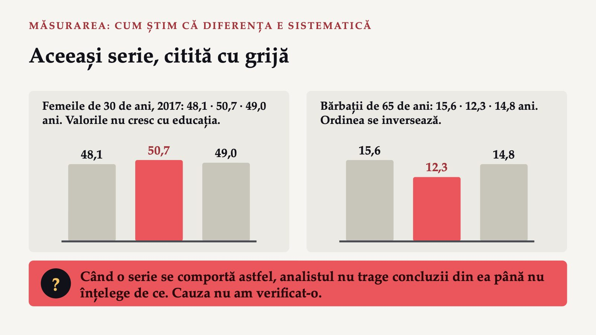
27 / 46Datele trebuie citite cu grijă. La femei, în același an, valorile nu cresc cu educația, iar la 65 de ani ordinea se inversează chiar la bărbați. Când o serie se comportă astfel, analistul nu trage concluzii din ea până nu înțelege de ce. Cauza nu am verificat-o, așa că nu o ghicim.
Comportamentele și sursele de date
![MĂSURAREA: CUM ȘTIM CĂ DIFERENȚA E SISTEMATICĂ Comportamentele și sursele de date Fumătorii zilnici, bărbați de 15 ani și peste, 2019: 24,5% (cel mult gimnaziul) 34,1% (liceu sau școală profesională) 27,6% (studii superioare). Cifrele nu sunt ajustate după vârstă: din ele nu se poate spune cât de mult ține fumatul de educație. Sursele ședinței: ancheta asupra veniturilor și condițiilor de viață; ancheta europeană de sănătate prin interviu; profilul de țară al OCDE; raportul european al OMS despre echitatea în sănătate. Pentru fiecare sursă, notați: pe cine a întrebat, în ce an și față de cine face comparația.](diapozitive/C07/028.jpg) 28 / 46
28 / 46Comportamentele arată, la rândul lor, că legătura cu educația nu e simplă. În ancheta de sănătate din 2019, fumătorii zilnici au fost mai frecvenți printre bărbații cu liceu sau școală profesională decât la ambele extreme. Cifrele nu sunt ajustate după vârstă: în grupul celor cu studii puține sunt mai mulți vârstnici, care fumează mai puțin. Când căutați cifra care verifică o săgeată de pe hartă, notați pentru fiecare sursă pe cine a întrebat, în ce an și față de cine face comparația. Cifrele nu sunt ajustate după vârstă: din ele nu se poate spune cât de mult ține fumatul de educație.
Unde acționează determinanții: cinci condiții
![UNDE ACȚIONEAZĂ DETERMINANȚII: CINCI CONDIȚII Unde acționează determinanții: cinci condiții Raportul Biroului Regional pentru Europa al OMS despre echitatea în sănătate (2019): serviciile de sănătate siguranța venitului și protecția socială condițiile de viață capitalul social și uman (educația, încrederea în ceilalți, sentimentul că îți controlezi viața) munca și condițiile de muncă. Materialul cursului de anul trecut folosea cinci domenii, grupate puțin altfel: stabilitatea economică venitul și protecția socială, plus munca educația, contextul social și comunitar capitalul social și uman accesul la serviciile de sănătate și calitatea lor serviciile de sănătate cartierul și mediul construit condițiile de viață](diapozitive/C07/029.jpg) 29 / 46
29 / 46Raportul european al Organizației Mondiale a Sănătății din 2019 grupează condițiile de care depinde o viață sănătoasă în cinci. Materialul de anul trecut al acestui curs folosea cinci domenii. Cele două împărțiri acoperă aceleași lucruri, grupate puțin altfel. Folosim împărțirea raportului, pentru că spre final vom lucra pe datele lui. stabilitatea economică → venitul și protecția socială, plus munca · educația, contextul social și comunitar → capitalul social și uman · accesul la serviciile de sănătate și calitatea lor → serviciile de sănătate · cartierul și mediul construit → condițiile de viață
Venitul și munca, în problema noastră
![UNDE ACȚIONEAZĂ DETERMINANȚII: CINCI CONDIȚII Venitul și munca, în problema noastră Sărăcia acționează pe trei căi: materială (lipsesc resursele pentru condiții de viață sănătoase), psihosocială (stresul cronic, sentimentul că nu controlezi nimic) și a comportamentelor (alegerile sănătoase devin mai greu de făcut). Venitul apare de două ori: costul direct (consultul la specialist, analizele, medicamentele) și costul indirect (drumul, ziua de muncă pierdută). Munca: lucrătorii fără forme legale apar chiar printre neasigurați. Cine lucrează cu ziua pierde ziua în care merge la medic; dacă nu e asigurat, plătește din buzunar medicamentele din ambulatoriu, o parte dintre analize și imagistica.](diapozitive/C07/030.jpg) 30 / 46
30 / 46Venitul este unul dintre cei mai direcți determinanți. Sărăcia acționează pe trei căi, toate cuprinse în cadrul Organizației Mondiale a Sănătății. În problema noastră, venitul apare de două ori: o dată în costul direct, o dată în costul indirect. Pentru un neasigurat, ambele cresc. Munca influențează sănătatea prin venit, prin asigurare, prin expuneri, prin stres și prin siguranța zilei de mâine; în profilul OCDE, lucrătorii fără forme legale apar chiar printre neasigurați. Cine lucrează cu ziua pierde ziua în care merge la medic; dacă nu e asigurat, plătește din buzunar medicamentele din ambulatoriu, o parte dintre analize și imagistica.
Educația, locuința, accesul la servicii
![UNDE ACȚIONEAZĂ DETERMINANȚII: CINCI CONDIȚII Educația, locuința, accesul la servicii Educația: tipul de muncă și venitul, dar și alfabetizarea în sănătate (capacitatea de a înțelege informația despre sănătate și de a te descurca în sistemul de sănătate), încrederea, sentimentul de control. Condițiile de viață: un sat fără transport public spre orașul cu policlinică transformă un consult de un sfert de oră într-o zi pierdută. Accesul: bariere financiare, geografice și de acceptabilitate (comunicarea, încrederea, rușinea, limba). OMS Europa (2019): diferențele de nevoi nesatisfăcute dintre grupuri au rămas aceleași sau au crescut între 2008 și 2017 în cele mai multe țări din regiune. Diferența medie după educație: 2,7 puncte procentuale în 2017, față de 2,6 în 2008. 2,6 2008 2,7 2017](diapozitive/C07/031.jpg) 31 / 46
31 / 46Educația așază oamenii pe scara socială, dar lucrează și pe alte căi: capacitatea de a înțelege informația despre sănătate, încrederea, sentimentul de control. Condițiile de viață intră în problema noastră pe ușa distanței. Accesul la servicii este determinantul cel mai apropiat de problema noastră, iar barierele lui sunt de trei feluri. Accesul nu înseamnă numai să ajungi la medic, ci și ce primești acolo: comunicarea clară, fără judecată, adaptată omului din fața ta face parte din acces. Diferența medie după educație: 2,7 puncte procentuale în 2017, față de 2,6 în 2008. OMS Europa (2019): diferențele de nevoi nesatisfăcute dintre grupuri au rămas aceleași sau au crescut între 2008 și 2017 în cele mai multe țări din regiune.
Încă două legături și ce urmează
![UNDE ACȚIONEAZĂ DETERMINANȚII: CINCI CONDIȚII Încă două legături și ce urmează Hrana: posibilitatea financiară de a cumpăra hrană sănătoasă este o condiție materială. Sănătatea mintală: mediile cu încredere scăzută între oameni (infracționalitate, izolare, lipsa cuiva la care să apelezi) se leagă de o sănătate mintală mai proastă. Comportamentele de risc și grupurile cele mai afectate (oamenii fără locuință, comunitățile marginalizate, unele minorități, persoanele cu dizabilități) au fiecare o ședință proprie. Seminarul de azi începe tocmai cu un astfel de grup.](diapozitive/C07/032.jpg) 32 / 46
32 / 46Materialul de anul trecut al cursului insista și pe alte două legături, pe care le amintim: hrana pe care o familie și-o permite depinde de venit, iar sănătatea mintală depinde de sprijinul celorlalți, de izolare și de rușinea de a cere ajutor. Comportamentele de risc și grupurile cele mai afectate de determinanții sociali au fiecare o ședință proprie. Seminarul de azi începe tocmai cu un astfel de grup.
Activitatea 3 · Propunerea pentru o instituție · 20 de minute
![ACTIVITATEA 3: PROPUNEREA PENTRU O INSTITUȚIE Activitatea 3 · Propunerea pentru o instituție · 20 de minute Alegeți una dintre trei instituții: primăria, școala sau casa de asigurări de sănătate. Pe foaia notei de lucru, ca la direcția de sănătate publică: între trei și cinci rânduri, fiecare cu patru coloane. Ce ar face instituția pentru cine ce cauză de pe hartă atinge după ce ați ști, peste un an, că a mers (o cifră pe care ați urmări-o și sursa ei) Propunerea trebuie să fie în puterea acelei instituții, nu o dorință adresată Guvernului.](diapozitive/C07/033.jpg) 33 / 46
33 / 46Fiecare echipă alege una dintre cele trei instituții: primăria, școala sau casa de asigurări de sănătate. Pornind de la harta proprie, scrieți, ca într-o notă de lucru a direcției de sănătate publică, între trei și cinci rânduri. Fiecare rând are patru coloane: ce ar face instituția, pentru cine, ce cauză de pe hartă atinge și după ce ați ști, peste un an, că a mers. Propunerea trebuie să fie în puterea acelei instituții, nu o dorință adresată Guvernului.
?
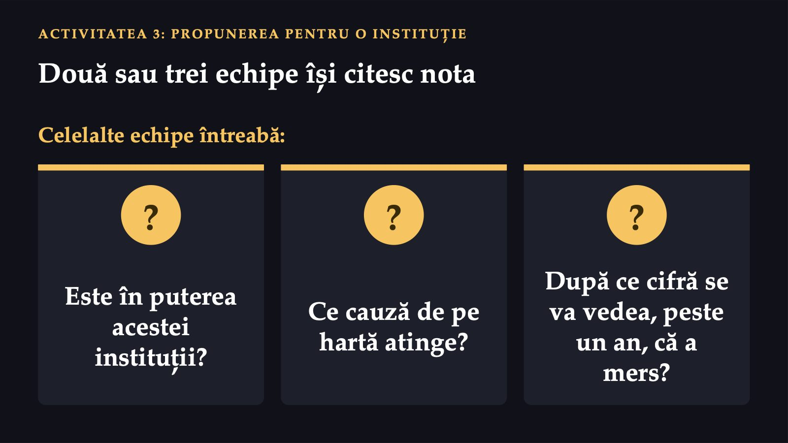
34 / 46Două sau trei echipe își citesc nota de lucru cu voce tare, iar celelalte echipe întreabă. Trei întrebări ajută: este măsura în puterea acestei instituții, ce cauză de pe hartă atinge și după ce cifră se va vedea, peste un an, că a mers.
Hărțile voastre lângă un raport european
![HĂRȚILE LÂNGĂ RAPORTUL OMS EUROPA Hărțile voastre lângă un raport european Hărțile voastre sunt raționamente despre România. Raportul Biroului Regional pentru Europa al OMS (2019) a încercat un pas în plus: să măsoare cât din diferența de sănătate autoraportată dintre cei mai bogați 20% și cei mai săraci 20% dintre adulți ține de fiecare dintre cele cinci condiții. ? ? ? ? ? Metoda: o descompunere statistică. Pornește de la diferență și o împarte între condiții, după cât de diferit le trăiesc cele două grupuri.](diapozitive/C07/035.jpg) 35 / 46
35 / 46Hărțile voastre sunt raționamente. Raportul european din 2019 a încercat să facă un pas în plus: să măsoare cât din diferența de sănătate dintre cei bogați și cei săraci ține de fiecare dintre cele cinci condiții. A folosit o metodă statistică de descompunere: pornește de la diferența de sănătate autoraportată dintre cei mai bogați 20% și cei mai săraci 20% dintre adulți și o împarte între condiții, după cât de diferit le trăiesc cele două grupuri.
Activitatea 4 · Harta voastră lângă figura raportului · 15 minute
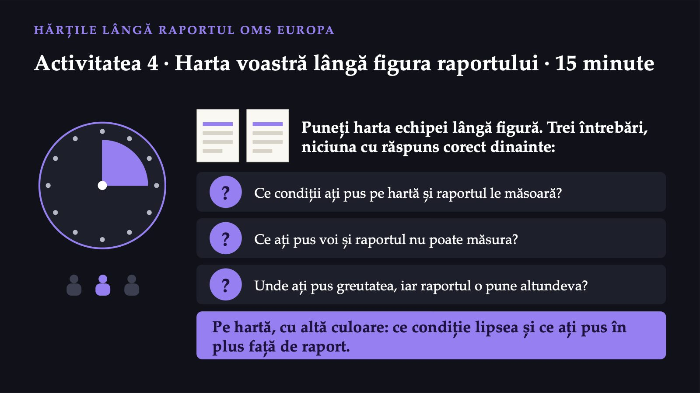
36 / 46Puneți harta echipei lângă figura raportului. Trei întrebări ajută comparația, și niciuna nu are un răspuns dat dinainte: ce condiții ați pus pe hartă și raportul le măsoară; ce ați pus voi și raportul nu poate măsura; unde ați pus greutatea, iar raportul o pune altundeva. Notați pe hartă, cu altă culoare, ce condiție lipsea și ce ați pus în plus față de raport. Apoi două echipe își arată harta și spun ce au schimbat.
Ce explică diferența de sănătate dintre cei mai bogați și cei mai săraci 20% (media țărilor Uniunii Europene)
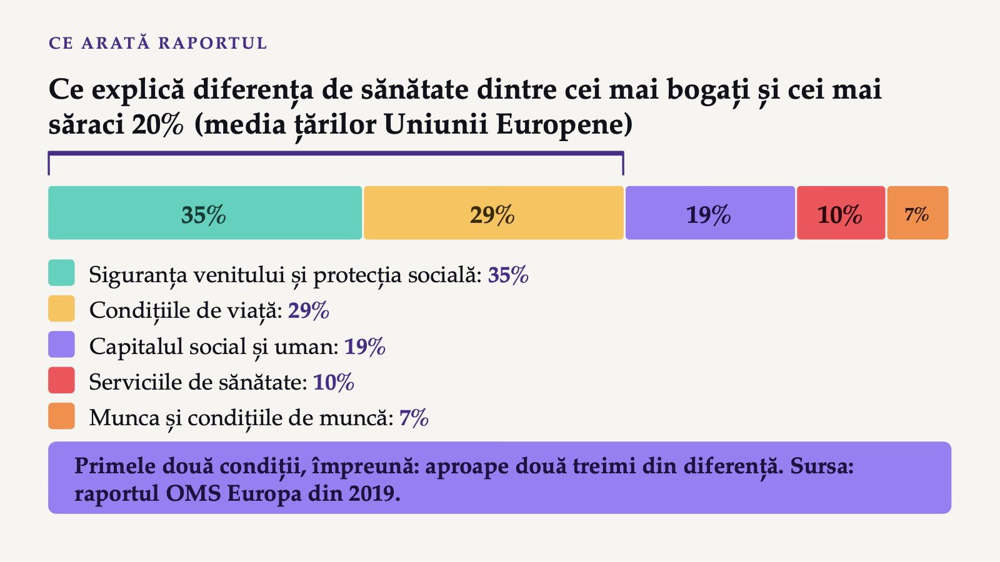
37 / 46Pentru țările Uniunii Europene, rezultatul arată astfel: siguranța venitului și protecția socială explică în medie 35% din diferență, condițiile de viață 29%, capitalul social și uman 19%, serviciile de sănătate 10%, iar munca și condițiile de muncă 7%. Primele două condiții, împreună, explică aproape două treimi din diferență.
Ce spune figura și ce nu spune
![CE ARATĂ RAPORTUL Ce spune figura și ce nu spune Nu explică problema noastră: măsoară diferența de sănătate autoraportată, nu nevoile nesatisfăcute. Este o medie pe țările Uniunii, nu o măsurătoare pentru România. Raportul nu a avut o măsură directă a calității muncii, ci doar a programului excesiv. De aici deducem noi, nu raportul, că partea de 7% a muncii este, probabil, subestimată. O descompunere statistică arată cât de mult se suprapun diferențele; nu demonstrează singură cauza. Totuși: serviciile de sănătate sunt o parte a explicației, dar nu cea mai mare. Partea cea mai mare stă în afara cabinetului medical.](diapozitive/C07/038.jpg) 38 / 46
38 / 46Câteva lucruri de știut, ca să nu citim figura mai mult decât spune. Ea nu explică problema noastră, ci diferența de sănătate autoraportată. Este o medie pe țările Uniunii, nu o măsurătoare pentru România. Raportul scrie singur că nu a avut o măsură directă a calității muncii; de aici deducem noi, nu raportul, că partea muncii este, probabil, subestimată. Și o descompunere statistică nu demonstrează singură cauza. Chiar și așa, figura arată ceva ce harta unei probleme de acces la medic poate scăpa: partea cea mai mare a explicației stă în venit, în protecția socială și în condițiile de viață, adică în afara cabinetului medical.
Dintre propunerile auzite azi, care credeți că ar ajuta cel mai mult în localitatea voastră?
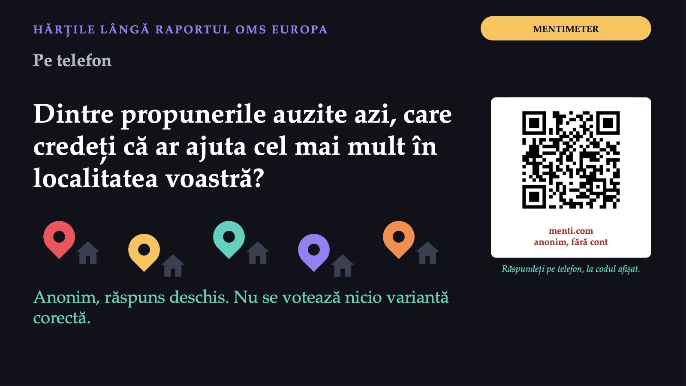
39 / 46O întrebare de opinie, pe telefon, anonim: dintre propunerile auzite azi, care credeți că ar ajuta cel mai mult în localitatea voastră? Răspundeți cu cuvintele voastre. Nu există o variantă corectă.
sănătatea în toate politicile
![AL TREILEA TERMEN NOU: SĂNĂTATEA ÎN TOATE POLITICILE Termenul nou 3: sănătatea în toate politicile O abordare a politicilor publice, din toate sectoarele, care ia în calcul în mod sistematic efectele deciziilor asupra sănătății, caută sinergii între sectoare și evită efectele dăunătoare, ca să îmbunătățească sănătatea populației și echitatea în sănătate. Ați întâlnit-o la a doua ședință a cursului: declarația de la Helsinki din 2013 și concluziile Consiliului Uniunii Europene din 2006. Dacă cele mai multe cauze stau în afara sectorului sanitar, și o parte din soluții trebuie căutate acolo.](diapozitive/C07/040.jpg) 40 / 46
40 / 46Dacă cele mai multe cauze stau în afara sectorului sanitar, atunci și o parte din soluții trebuie căutate acolo. Aceasta este ideea pe care ați întâlnit-o la a doua ședință a cursului, când am vorbit despre declarația de la Helsinki din 2013 și despre concluziile Consiliului Uniunii Europene din 2006. Acum o folosim pe un caz: pe propunerile voastre.
Pe problema noastră, lângă propunerile voastre
![AL TREILEA TERMEN NOU: SĂNĂTATEA ÎN TOATE POLITICILE Pe problema noastră, lângă propunerile voastre Primăria: transportul spre localitatea cu policlinică, programul unei asistente comunitare, ajutorul pentru obținerea actului de identitate. Școala: aceleași cunoștințe, pentru toți copiii, despre cum funcționează asigurarea și medicul de familie; atenția la copiii care lipsesc din cauza bolilor netratate. Casa de asigurări: profilul OCDE descrie trei teme (ce acoperă pachetul minim al neasiguraților, cine rămâne fără asigurare, cât plătesc oamenii din buzunar pentru medicamente). Echipa care o alege verifică întâi care dintre ele țin de casa de asigurări. Niciuna dintre aceste decizii nu se ia în spital, și toate schimbă cauzele de pe hărțile voastre.](diapozitive/C07/041.jpg) 41 / 46
41 / 46Pentru problema noastră, ideea devine concretă. Primăria poate decide transportul spre localitatea cu policlinică, programul unei asistente comunitare, ajutorul pentru obținerea actului de identitate. Școala poate da tuturor copiilor aceleași cunoștințe despre cum funcționează asigurarea și medicul de familie. Pentru casa de asigurări, profilul OCDE descrie trei teme; echipa care o alege verifică întâi care dintre ele țin de casa de asigurări. Niciuna dintre aceste decizii nu se ia în spital, și toate schimbă cauzele de pe hărțile voastre. Școala: atenția la copiii care lipsesc din cauza bolilor netratate.
Uneltele și o regulă
![AL TREILEA TERMEN NOU: SĂNĂTATEA ÎN TOATE POLITICILE Uneltele și o regulă Uneltele: evaluarea efectelor asupra sănătății înaintea unei decizii; obiectivele comune ale mai multor ministere; bugetele coordonate; indicatorii de echitate urmăriți împreună. Regula, întâlnită tot la a doua ședință: universalismul proporțional, propus în 2010 de raportul condus de Marmot. Măsuri pentru toți, cu o intensitate proporțională cu dezavantajul. O măsură numai pentru cei mai săraci îi stigmatizează și îi ratează pe cei de la mijlocul scării; o măsură egală pentru toți îi ajută prea puțin pe cei de jos.](diapozitive/C07/042.jpg) 42 / 46
42 / 46În practică, sănătatea în toate politicile are câteva unelte: evaluarea efectelor asupra sănătății înaintea unei decizii, obiectivele comune ale mai multor ministere, bugetele coordonate și indicatorii de echitate urmăriți împreună. Mai are și o regulă despre cui se adresează măsurile: măsurile să fie pentru toți, dar cu o intensitate proporțională cu dezavantajul. Este universalismul proporțional, propus în 2010 de raportul condus de Marmot.
Activitatea 5 · Întrebările voastre
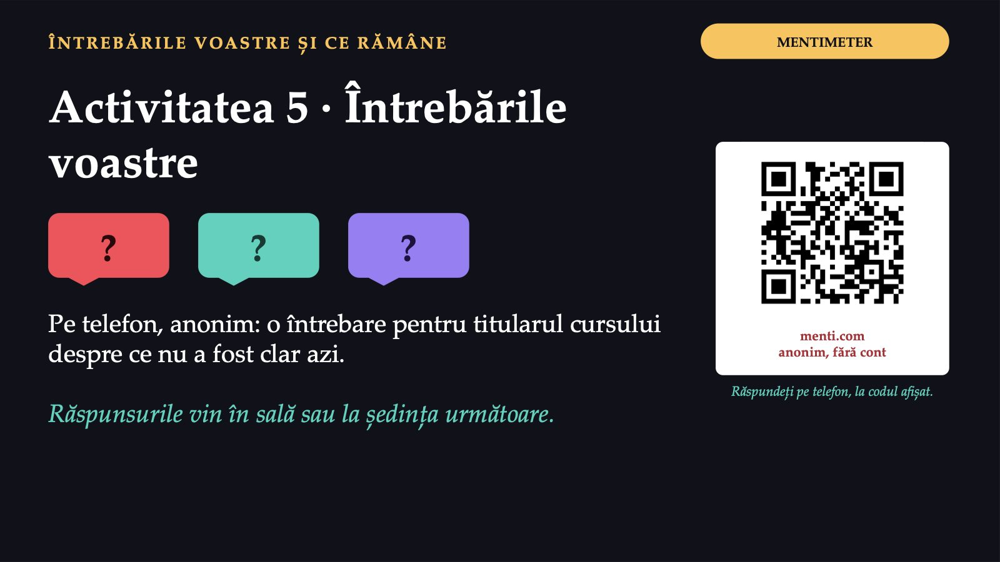
43 / 46Înainte de final, pe telefon, anonim: scrieți o întrebare despre ce nu a fost clar azi. Răspunsurile vin acum, în sală, sau la ședința următoare.
Kahoot
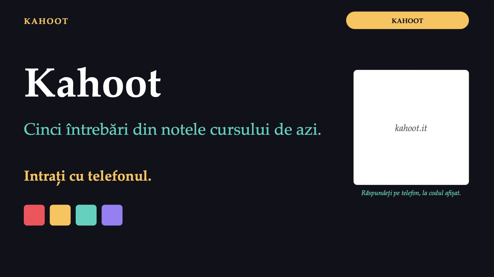
44 / 46Încheiem cu cinci întrebări din notele de azi, pe telefon. Fiecare are o singură variantă adevărată.
1
![ÎNTREBĂRILE VOASTRE ȘI CE RĂMÂNE Ce rămâne după ședință 1 Diferențele de sănătate dintre grupuri au cauze sociale care se pot numi, desena și măsura: poziția socială (determinanții structurali) produce condițiile de viață și accesul la servicii (determinanții intermediari), iar acestea se văd în sănătate. 2 O diferență devine inechitate când este sistematică, produsă social (deci se poate schimba) și nedreaptă. Se măsoară ca diferență și ca raport, pe date oficiale, citind cu atenție numitorul și anul. 3 Cea mai mare parte a explicației stă în afara cabinetului medical; de aceea măsurile se iau și la primărie, la școală, la casa de asigurări: sănătatea în toate politicile.](diapozitive/C07/045.jpg) 45 / 46
45 / 46Trei idei de luat acasă. Diferențele de sănătate dintre grupuri au cauze sociale care se pot numi, desena și măsura. O diferență devine inechitate când este sistematică, produsă social și nedreaptă, iar o măsurăm ca diferență și ca raport, citind cu atenție numitorul și anul. Cea mai mare parte a explicației stă în afara cabinetului medical; de aceea măsurile se iau și la primărie, la școală, la casa de asigurări.
De mâine, ca studenți la sănătate publică
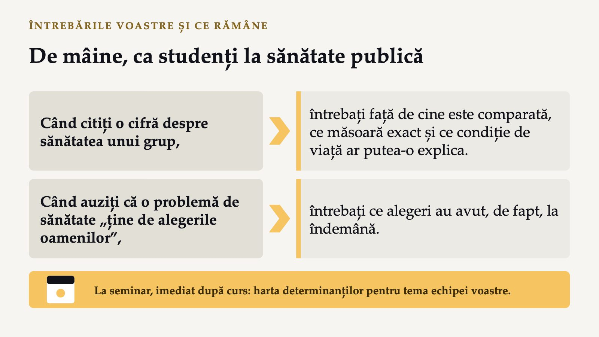
46 / 46Ce puteți face de mâine, ca studenți la sănătate publică: când citiți o cifră despre sănătatea unui grup, întrebați față de cine este comparată, ce măsoară exact și ce condiție de viață ar putea-o explica. Și când auziți că o problemă de sănătate „ține de alegerile oamenilor”, întrebați ce alegeri au avut, de fapt, la îndemână. Ne vedem la seminar, unde fiecare echipă desenează harta determinanților pentru tema ei.
Săgeți sau spațiu: navigare · O: vedere de ansamblu · N: notele prezentatorului · F: ecran complet · Esc: închidere